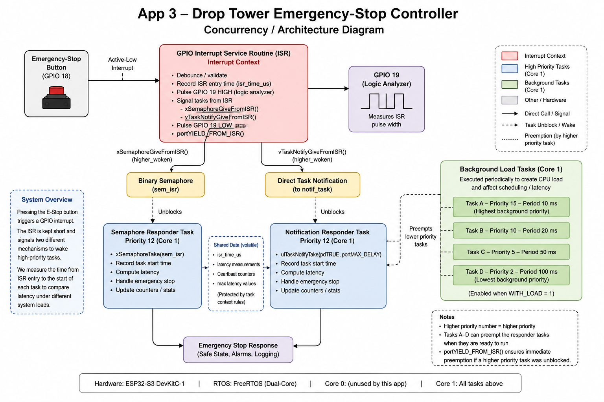
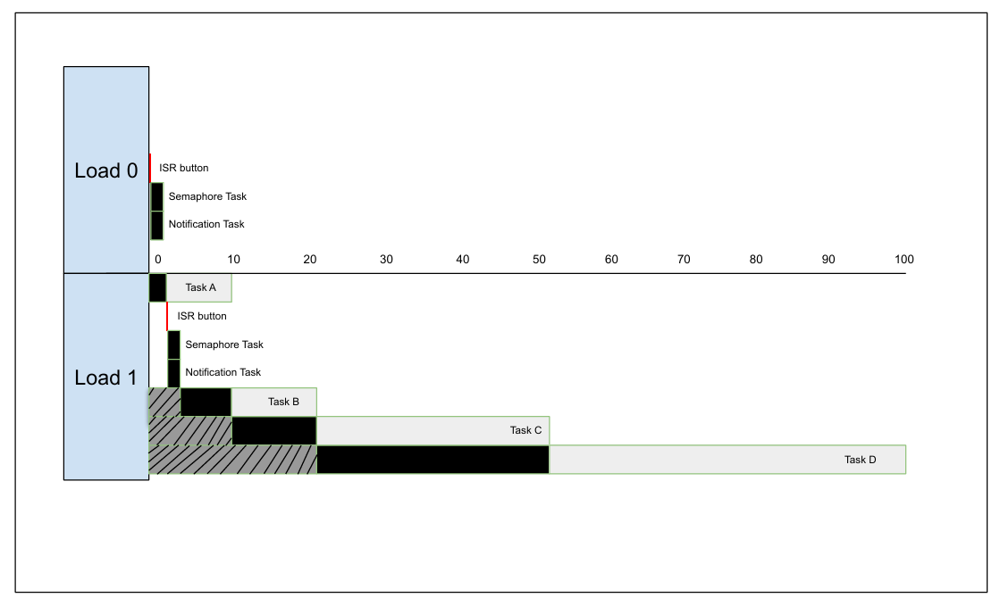

System and Concurrency Diagram
Pressing the emergency-stop button on GPIO 18 generates an active-low interrupt. The interrupt service routine records its entry time, pulses GPIO 19 for the logic analyzer, and signals two FreeRTOS responder tasks using a binary semaphore and a direct task notification.
Both responder tasks run on Core 1 at priority 12. When the background workload is enabled, Task A has priority 15 and can preempt the responders. Tasks B, C, and D have lower priorities and cannot preempt a responder after it begins executing.

Task and Priority Table
The two interrupt-response tasks use the same priority so the experiment can compare the two signaling methods under similar scheduling conditions. Tasks A through D create a controlled background workload when WITH_LOAD is set to 1.
| Task | Trigger or Period | Priority | Core | Purpose |
|---|---|---|---|---|
| Task A | 10 ms | 15 | 1 | Highest-priority background workload. It can preempt both responder tasks. |
| Semaphore responder | GPIO interrupt | 12 | 1 | Receives the emergency event through a binary semaphore and measures ISR-to-task latency. |
| Notification responder | GPIO interrupt | 12 | 1 | Receives the emergency event through a direct task notification and measures ISR-to-task latency. |
| Task B | 20 ms | 10 | 1 | Performs a single-precision FIR workload to create processor demand. |
| Task C | 50 ms | 5 | 1 | Calculates CRC-32 over a buffer as a periodic background workload. |
| Task D | 100 ms | 2 | 1 | Runs a worst-case insertion sort at the lowest background priority. |
WCET Evidence
Each periodic background task records its maximum observed execution time using the ESP32 microsecond timer. Heartbeat counters are also used to confirm that all four tasks continue executing while the interrupt-response experiment is running.

WCET measurements are taken around only the computational work of each task. The periodic delay is not included in the measured execution time.
Interrupt and Bottom-Half Design
The ISR is intentionally short. It debounces the input, records timing information, pulses the logic-analyzer output, signals the two responder tasks, and requests a scheduler yield when needed. Longer operations such as logging and emergency-response handling are deferred to the bottom-half tasks.
Emergency-stop button
|
v
GPIO interrupt service routine
|
+---- Binary semaphore --------> Semaphore responder
|
+---- Direct notification -----> Notification responder
|
v
Safe-state response and logging